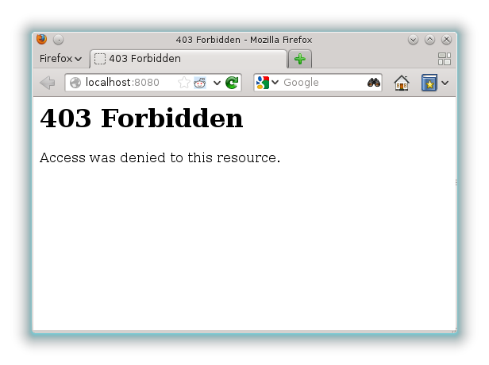
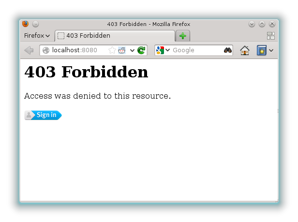
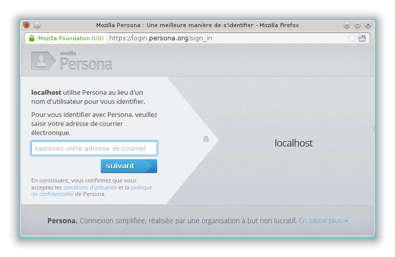
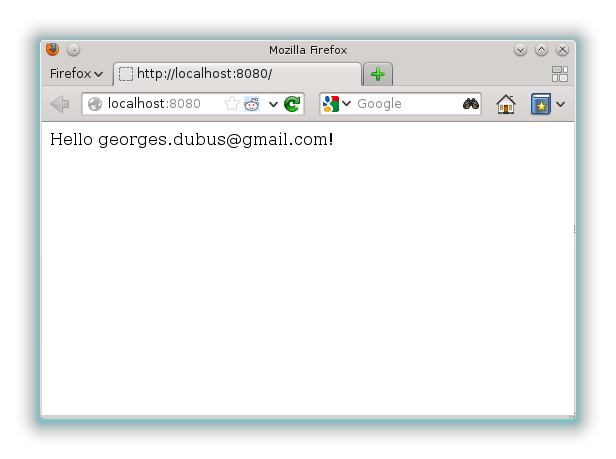

A few days ago, the first beta of persona was released, and I though
it would be nice to try it as a authentication mechanism in my next
project. For the pyramid framework, the persona documentation pointed
to this blog post : Painless Authentication with Pyramid and
BrowserID, which describes how to use pyramid_whoauth with
repoze.who.plugins.browserid to use persona in pyramid.
Sadly, this method only provides a special 403 page with a
login button, and no obvious way to put a login button on another
page. A quick look at the internals revealed it wouldn't be easy to do
so, as most of the work is done inside a wsgi application. To have a
login button, I would have to rewrite the generation of the javascript
that communicates with the persona api, and probably most of the
login code in order to keep the csrf verification.
So, instead of re-implementing half of it and try to plugin it with
existing implementation, I decided to rewrite it from scratch, and I
though it would be nice to release it as a library. It's called
pyramid_persona, and it's available on pypi. The README should
explain how to use it, but here is a more visual demonstration.
The forbidden view
First, let's show how to have it handle authentication and give us a nice
forbidden view. Let's take a small application with a view that says
hello if we are logged in, and returns a 403 otherwise.
from waitress import serve
from pyramid.config import Configurator
from pyramid.response import Response
from pyramid.security import authenticated_userid
from pyramid.exceptions import Forbidden
def hello_world(request):
userid = authenticated_userid(request)
if userid is None:
raise Forbidden()
return Response('Hello %s!' % (userid,))
if __name__ == '__main__':
config = Configurator()
config.add_route('hello', '/')
config.add_view(hello_world, route_name='hello')
app = config.make_wsgi_app()
serve(app, host='0.0.0.0')
Of course, all we get is an error message:

Let's include pyramid_persona and add some settings. The secret is
used to sign the cookies, and the audience is a security feature of
persona, to prevent an attacker from logging into your website using
the login process from another website.
settings = {
'persona.secret': 'some secret',
'persona.audience': 'http://localhost:8080'
}
config = Configurator(settings=settings)
config.include('pyramid_persona')
We now have a login button on the forbidden page, and the login
process works as expected.

Clicking on the login button opens the persona login form (in french
for me, because I'm french).

Once it's done, we are logged in, the page is reloaded, and everything
works as expected.

Conclusion
pyramid_persona provides a quick to setup authentication method,
that can be customized to grow with your app. It is available on
pypi, so it's pip installable. You can check the readme and the
source on github. Of course, issue reports and suggestions are welcome.
There are comments.